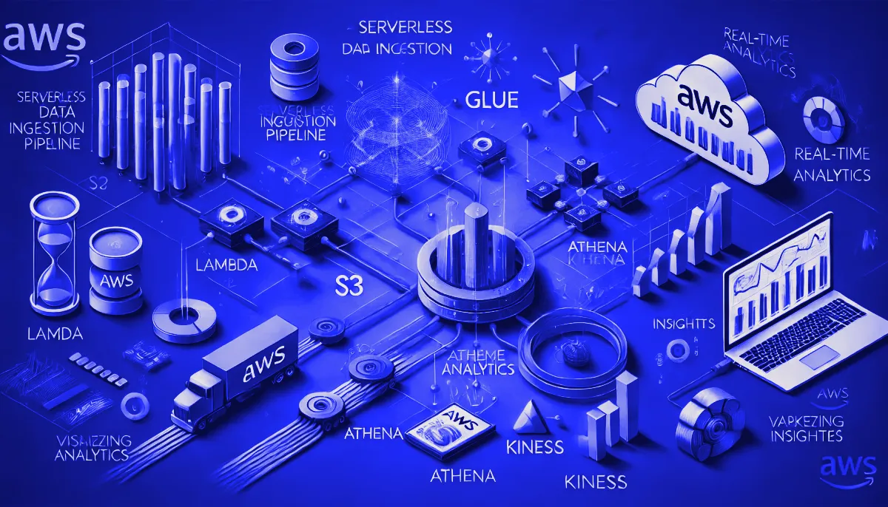
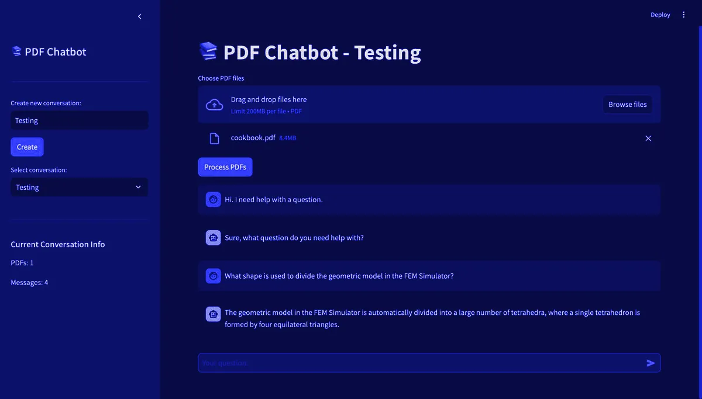
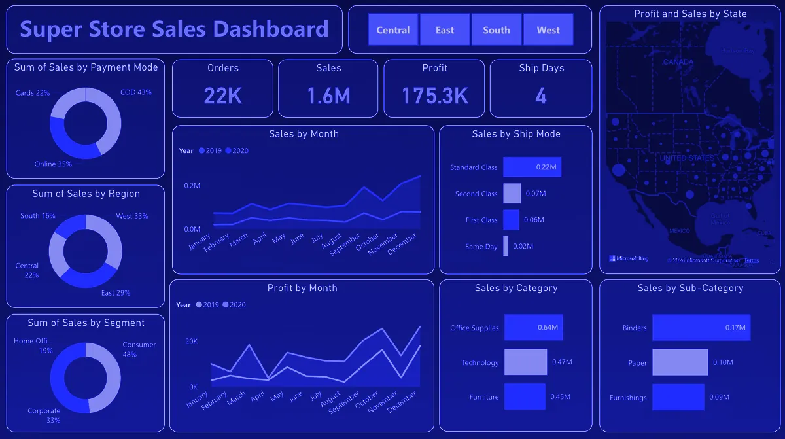

Aug 2023 — May 2025
Graduated May 2025
Master of Science in Applied Data Science
University of Southern California — Los Angeles, CA
Relevant Courses
Currently
Software Engineer, Machine Learning
at LinkedIn
Signal from noise.
Based in
Mountain View, CA
37.3861° N · 122.0839° W
01Model card
I design intelligent systems that scale — from data pipelines to machine learning to analytics.
I'm Aaryan Shah, a Software Engineer, Machine Learning at LinkedIn, based in Mountain View, CA. I earned my Master's in Applied Data Science from USC in May 2025. I specialize in Data Mining, Analytics, Machine Learning, and NLP. My blend of academic knowledge and hands-on experience equips me to deliver data-driven insights and solutions for strategic decision-making.
250K+
data points processed for large-scale NLP research
300+
data sources integrated into a scalable AWS & SQL pipeline
1TB
datasets queried with chunking & parallel processing
94%
accuracy in published fetal-health ML research
Intended use — In my work, I specialize in:
Developing robust data pipelines and integrating data from multiple sources to support seamless analytics.
Building and optimizing machine learning models, including natural language processing (NLP) and large language models (LLMs), to drive insights and enhance data-informed decision-making.
Translating raw data into meaningful patterns and visual insights using advanced dashboarding tools like PowerBI and Tableau, ensuring real-time, actionable insights are accessible across teams.
Utilizing big data tools like Apache Spark alongside AWS and Azure services to efficiently process and analyze vast datasets, enabling comprehensive, data-driven strategies.
I believe in having fun, taking ownership of my work, and always trusting in my abilities. Known for my adaptability, precision, and strong work ethic, I bring a unique blend of creativity and analytical thinking to every project. Outside of work, I enjoy capturing the world through photography and travel, always seeking new perspectives.
02Deployments
Jan 2026 — Present
Software Engineer, Machine Learning
Mountain View, CA
Live
Dec 2023 — Dec 2025
NLP Researcher
Led a large-scale NLP project, processing over 250,000 data points to categorize strategic initiatives for major oil and gas companies, aimed at enhancing strategic decision-making. Worked on boosting a BERT-based model’s accuracy by 20% through a custom neural network architecture that integrates domain-specific clustering with BERT embeddings.
Dec 2023 — Dec 2025
Data Engineer
Built a scalable AWS and SQL data pipeline integrating 300+ sources, boosting analytics by 25% with real-time insights. Streamlined data processing for 200+ sources using Apache Spark, improving accuracy and efficiency by 25%. Leveraged serverless architecture for batch and event-driven workflows, handling a 50% data volume increase seamlessly. Optimized SQL queries, improving data retrieval speed by 35% for faster decision-making.
Feb 2022 — May 2022
Machine Learning Intern
Led a team to build an Air Quality Prediction System using real-time API data, reducing insight delivery time by 30% through cloud-deployed ML models. I improved model accuracy by 25% with hyperparameter tuning and created 25+ PowerBI dashboards for actionable insights. Enhanced air quality forecasts by 20% using advanced Markov modeling techniques.
Jun 2021 — Aug 2021
Software Engineer Intern
Reduced project costs by 15% through a PostgreSQL-based cost tracking system, enhancing financial analysis and uncovering key savings areas. Improved application performance by boosting page load speed by 40% through optimized MongoDB queries.
03Experiments

Developed a serverless data ingestion pipeline to capture and process real-time retail transaction data using AWS (Lambda, Glue, S3, Athena, Kinesis), Python, and SQL. Enabled efficient data flow and transformed raw data into insights, visualized in Grafana for data-driven marketing and business strategies.
Check it out!Built a hybrid recommendation system using item-based collaborative filtering and machine learning models (XGBoost, CatBoost) on the Yelp dataset. Built a scalable data pipeline with PySpark and Spark RDDs to process over 1 million records, enabling rapid experimentation and optimized model performance with an RMSE of 0.9798.
Check it out!
Developed a conversational PDF query system using LangChain, OpenAI GPT models, and FAISS for efficient document retrieval. Optimized document parsing and embedding with PyPDF2 and a chunk overlap strategy for better context retention. Integrated FAISS vector storage for accurate retrieval, enabling precise, context-aware responses to user queries.
Check it out!Developed a custom 3-layer CNN model to detect Martian frost using HiRISE data, achieving 82% validation accuracy. Enhanced model performance with data augmentation, regularization, and early stopping techniques. Experimented with VGG16, ResNet50, and EfficientNetB0 architectures, showcasing their effectiveness in Martian image classification tasks.
Check it out!
Created an interactive PowerBI dashboard to track $1.6M in sales across regions and customer segments in United States, offering real-time insights for leadership. Developed a 15-day sales forecast model using historical data and DAX, accurately predicting demand to support inventory planning and promotional strategies.
Check it out!Engineered a custom SQL language in Python with complete SQL functionality, delivered through an emoji-based interface to simplify complex queries for non-experts. Enhanced processing for large datasets up to 1TB with data chunking and parallel processing via joblib, significantly reducing query times and increasing data throughput.
Check it out!Built an NLP-driven course recommendation engine with TF-IDF and content-based filtering, achieving high accuracy in matching courses to user preferences. Enhanced recommendations for over 10,000 profiles using collaborative filtering and improved course completion rates through A/B testing on recommendation models, delivering highly tailored content for diverse learning needs.
Check it out!04Papers
Design Engineering, Scopus International Journal, Volume 2021, Issue 07
This research introduces a machine learning-based prediction system designed to assist healthcare providers in monitoring the health of developing infants. By analyzing cardiotocographic data, the system can automatically classify fetal health as normal, suspicious, or pathological, achieving a high accuracy rate of 94% using the Random Forest algorithm. This approach supports physicians by reducing diagnostic errors and improving early detection of potential complications in late-stage pregnancies. The study demonstrates the system’s effectiveness in handling real-time variability in medical data, offering a powerful tool for better prenatal care.
Techno Journal IETE-SF, DJ Spark 2022-23
This research tackles the overwhelming choice in online education by creating an intelligent recommendation system that connects students with the most relevant courses. Powered by advanced machine learning algorithms, the system personalizes recommendations based on each student’s unique academic background, goals, and learning preferences. By combining collaborative, content-based, and hybrid filtering, this solution empowers students to make informed choices, boosting their learning outcomes and driving academic success.
Techno Journal IETE-SF, DJ Spark 2021-22
This research introduces an autonomous UV sanitization system designed to protect frontline workers by reducing their exposure to contaminated areas. Using Raspberry Pi, OpenCV, and a human detection system, the robot safely and efficiently disinfects spaces by automatically turning off UV light when humans are detected nearby. Equipped with a versatile rocker-bogie mechanism, it can navigate complex terrains, including stairs, making it ideal for sanitizing hospitals, schools, and offices. This system aims to provide a portable, cost-effective solution that enhances safety in high-risk environments.
05Training data
University of Southern California — Los Angeles, CA
Relevant Courses
University of Mumbai — Mumbai, India
Relevant Courses
06Architecture
L1
My favorite languages for systems programming and software engineering.
L2
My preferred databases for building scalable applications.
L3
My go-to libraries for machine learning and data analysis.
L4
My preferred tools for creating interactive dashboards and data visualizations.
L5
My tools for deployment and infrastructure management.
L6
My essential tools for development and collaboration.
L7
My cloud platforms for hosting and deployment.
L8
My preferred technologies for large-scale data processing and analytics.
07Inference endpoint
I'm always interested in hearing about new opportunities, collaborations, or just having a chat about data science and technology. Feel free to reach out!